NIGERIAN PRESIDENTS (Past-Present)
A Brief Story of Nigeria Leading to Its Presidents
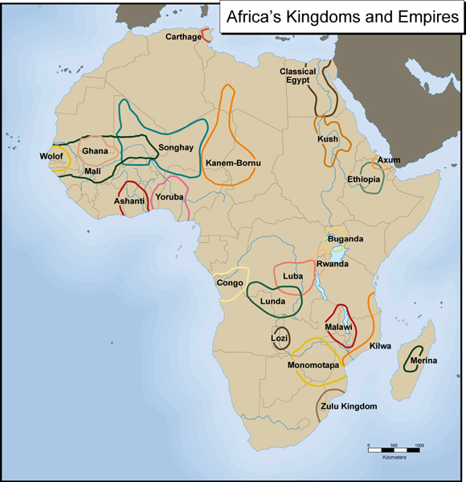
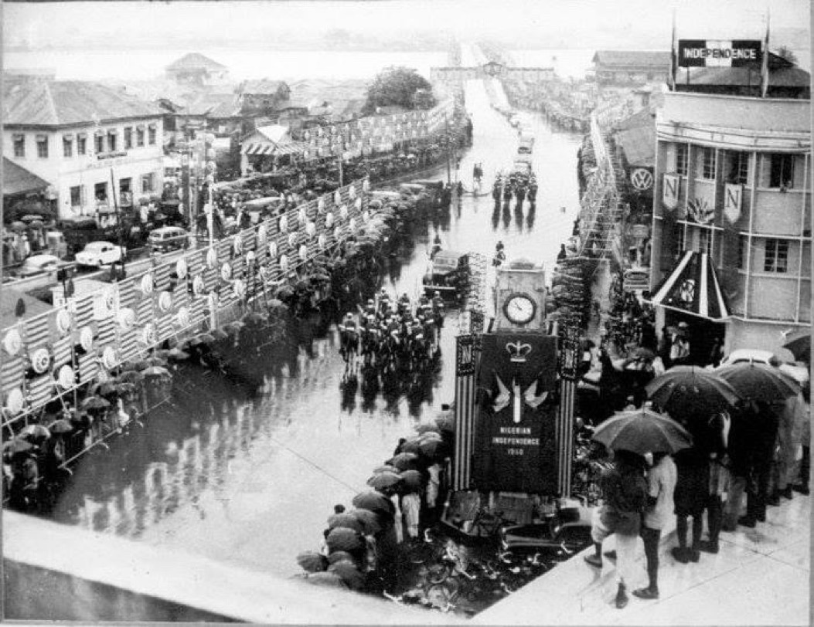
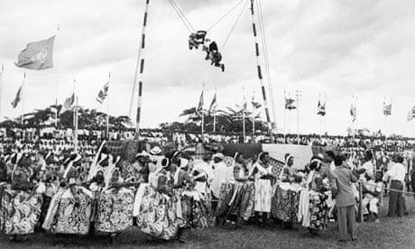
Nigeria’s story began long before colonial rule, with powerful kingdoms and empires such as the Benin Kingdom, Oyo Empire, and the Sokoto Caliphate. These societies had structured governments, thriving trade systems, and rich cultures. However, in the late 19th century, British colonial forces took control of the region, eventually merging the Northern and Southern protectorates in 1914 to form modern-day Nigeria.
Under British rule, Nigerians experienced political and economic changes, but also growing dissatisfaction. This led to the rise of nationalist movements led by figures like Nnamdi Azikiwe, Obafemi Awolowo, and Ahmadu Bello. Their efforts paid off when Nigeria gained independence on October 1, 1960, becoming a sovereign nation with hopes of unity and progress.
In 1963, Nigeria became a republic, and Nnamdi Azikiwe emerged as its first President. However, political instability soon followed, leading to the military coup of 1966. This marked the beginning of a long period where military leaders ruled the country, often coming to power through coups. The tension from these changes eventually led to the Nigerian Civil War (1967–1970), a major conflict that tested the nation’s unity.
After the war, Nigeria continued under military rule for many years, interrupted briefly by civilian leadership between 1979 and 1983. Several military governments introduced reforms but also faced criticism for authoritarian rule and economic struggles. The annulment of the 1993 election became a turning point, deepening the demand for democracy.
In 1999, Nigeria finally returned to democratic governance, marking the beginning of the Fourth Republic. Since then, the country has experienced continuous civilian rule, with leaders elected by the people. Despite challenges such as economic instability and security issues, Nigeria remains Africa’s most populous nation and continues to evolve politically and economically.
This historical journey—from pre-colonial kingdoms, through colonial rule, independence, military regimes, and finally democracy—sets the stage for the list of presidents who have led Nigeria from 1963 to the present day.
List of Nigerian Presidents
1. Dr. Nnamdi Azikiwe
2. Major General Johnson Thomas Umunnakwe Aguiyi-Ironsi
3. General Yakubu Dan-Yumma Gowon
4. General Murtala Ramat Mohammed
5. General Olusegun Matthew Okikiola Aremu Obasanjo
6. Alhaji Shehu Usman Aliyu Shagari
7. Major General Muhammadu Buhari
8. General Ibrahim Badamasi Babangida
9. Chief Ernest Adegunle Oladeinde Shonekan
10. General Sani Abacha
11. General Abdulsalami Alhaji Abubakar
12. Chief Olusegun Matthew Okikiola Aremu Obasanjo
13. Umaru Musa Yar’Adua
14. Dr. Goodluck Ebele Azikiwe Jonathan
15. Muhammadu Buhari
16. Asiwaju Bola Ahmed Adekunle Tinubu
1. Dr. Nnamdi Azikiwe (1904–1996)
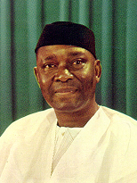
Full Name: Benjamin Nnamdi Azikiwe
Nnamdi Azikiwe, popularly known as “Zik,” was born in 1904 in Zungeru, Nigeria.
He was a key nationalist leader who fought for Nigeria’s independence from British rule.
Azikiwe built a strong reputation as a journalist, using media to inspire political awareness.
In 1963, he became Nigeria’s first President under the First Republic.
His role was largely ceremonial due to the parliamentary system in place then.
He died in 1996, leaving behind a legacy as a founding father of Nigeria.
Back to Top
2. Major General Johnson Thomas Umunnakwe Aguiyi-Ironsi (1924–1966)
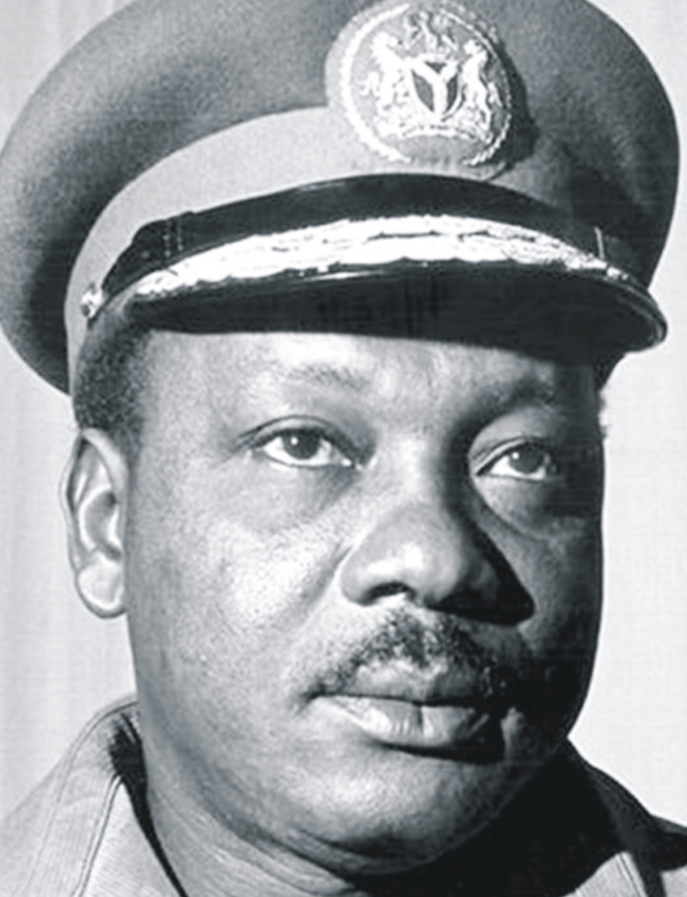
Full Name: Johnson Thomas Umunnakwe Aguiyi-Ironsi
Ironsi was born in 1924 in Abia State, Nigeria.
He rose through the ranks of the Nigerian Army to become a General.
In 1966, he became Head of State after Nigeria’s first military coup.
He attempted to unify Nigeria by abolishing the federal system.
His policies led to tension across regions of the country.
He was assassinated in a counter-coup later in 1966.
Back to Top
3. General Yakubu Dan-Yumma Gowon (1934– )
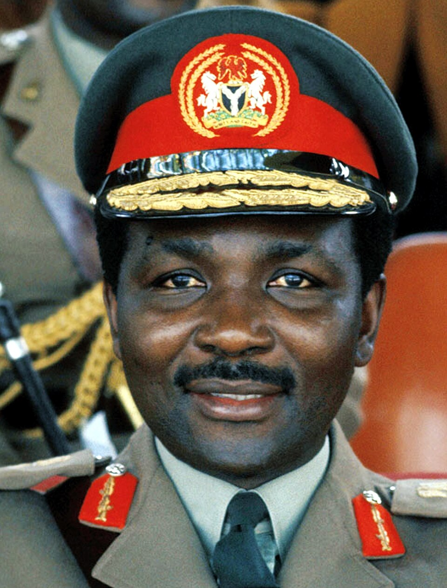
Full Name: Yakubu Dan-Yumma Gowon
Yakubu Gowon was born in 1934 in Plateau State, Nigeria.
He became Head of State in 1966 at a young age after a military coup.
Gowon led Nigeria during the Civil War from 1967 to 1970.
His leadership focused on preserving Nigeria’s unity.
After the war, he promoted reconciliation and reconstruction programs.
He was overthrown in a peaceful military coup in 1975.
Back to Top
4. General Murtala Ramat Mohammed (1938–1976)
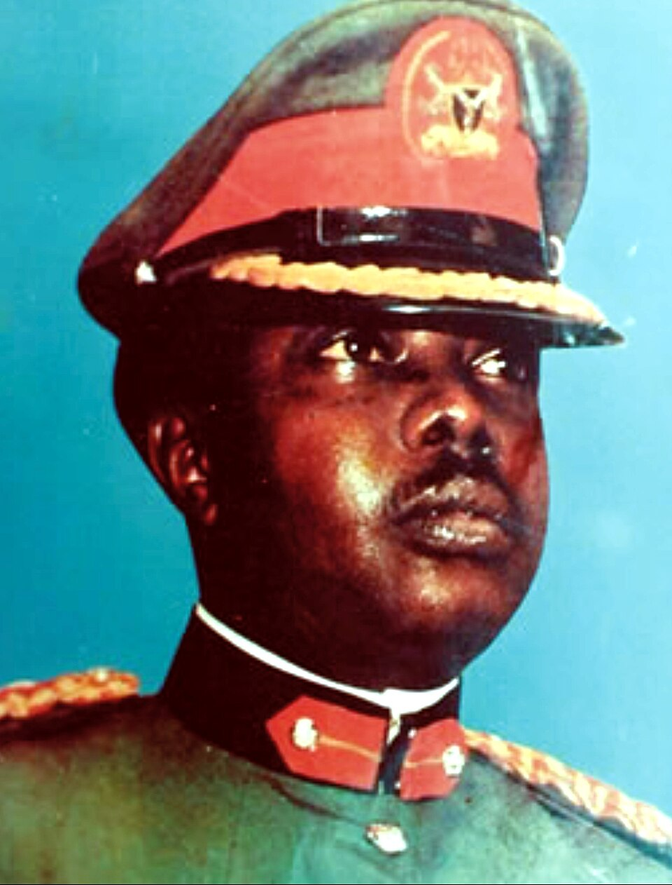
Full Name: Murtala Ramat Mohammed
Murtala Mohammed was born in 1938 in Kano State, Nigeria.
He became Head of State in 1975 after a military coup.
He was known for his bold and decisive leadership style.
His government introduced major reforms in public service.
He gained widespread support from Nigerians in a short time.
He was assassinated in 1976 during an attempted coup.
Back to Top
5. General Olusegun Matthew Okikiola Aremu Obasanjo (1937– )
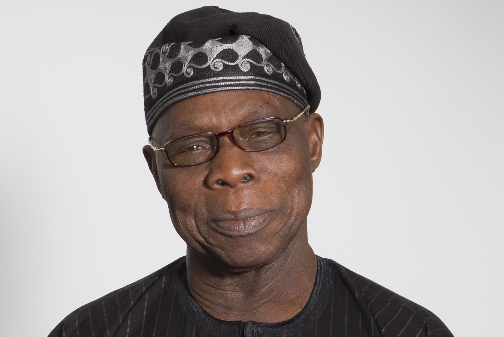
Full Name: Olusegun Matthew Okikiola Aremu Obasanjo
Obasanjo was born in 1937 in Ogun State, Nigeria.
He first became Head of State in 1976 after Murtala’s death.
He successfully handed over power to a civilian government in 1979.
Years later, he returned as a civilian president in 1999.
His leadership focused on economic reforms and debt relief.
He remains one of Nigeria’s most influential political figures.
Back to Top
6. Alhaji Shehu Usman Aliyu Shagari (1925–2018)
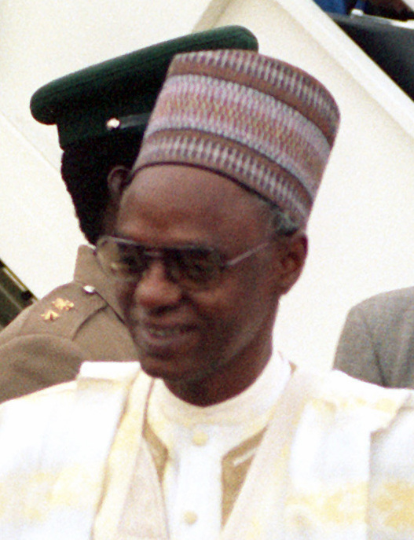
Full Name: Shehu Usman Aliyu Shagari
Shagari was born in 1925 in Sokoto State, Nigeria.
He became Nigeria’s first executive president in 1979.
His administration emphasized agriculture and infrastructure development.
However, his government faced economic decline and corruption allegations.
His presidency marked Nigeria’s Second Republic.
He was overthrown in a military coup in 1983 and died in 2018.
Back to Top
7. Major General Muhammadu Buhari (1942–2025)
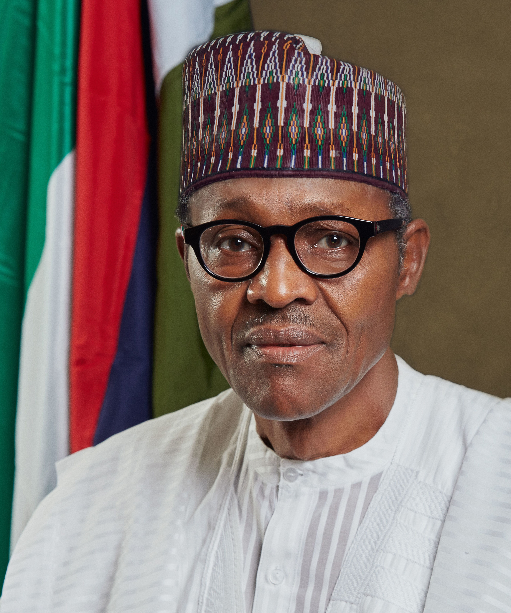
Full Name: Muhammadu Buhari
Buhari was born in 1942 in Katsina State, Nigeria.
He became Head of State in 1983 after a military coup.
His regime was known for strict discipline and anti-corruption campaigns.
He was overthrown in 1985 by another military coup.
Decades later, he returned as a democratically elected president in 2015.
He served until 2023, focusing on security and economic reforms.
Back to Top
8. General Ibrahim Badamasi Babangida (1941– )
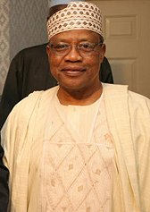
Full Name: Ibrahim Badamasi Babangida
Babangida was born in 1941 in Niger State, Nigeria.
He became military president in 1985 after overthrowing Buhari.
His regime introduced economic reforms like the SAP program.
He modernized parts of Nigeria’s economy and infrastructure.
However, his government was marked by political controversies.
He stepped down in 1993 after annulling a presidential election.
Back to Top
9. Chief Ernest Adegunle Oladeinde Shonekan (1936–2022)
 Full Name:
Full Name: Ernest Adegunle Oladeinde Shonekan
Shonekan was born in 1936 in Lagos State, Nigeria.
He led an interim government in 1993 after Babangida stepped down.
His administration aimed to stabilize Nigeria politically.
However, it lacked strong support and authority.
His government lasted only a few months.
He was removed by General Sani Abacha and died in 2022.
Back to Top
10. General Sani Abacha (1943–1998)
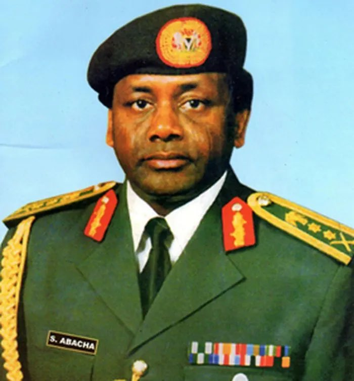
Full Name: Sani Abacha
Abacha was born in 1943 in Kano State, Nigeria.
He seized power in 1993 after overthrowing Shonekan.
His regime was known for strict military control.
He faced global criticism over human rights abuses.
Despite this, Nigeria experienced some economic stability under him.
He died suddenly in office in 1998.
Back to Top
11. General Abdulsalami Alhaji Abubakar (1942– )
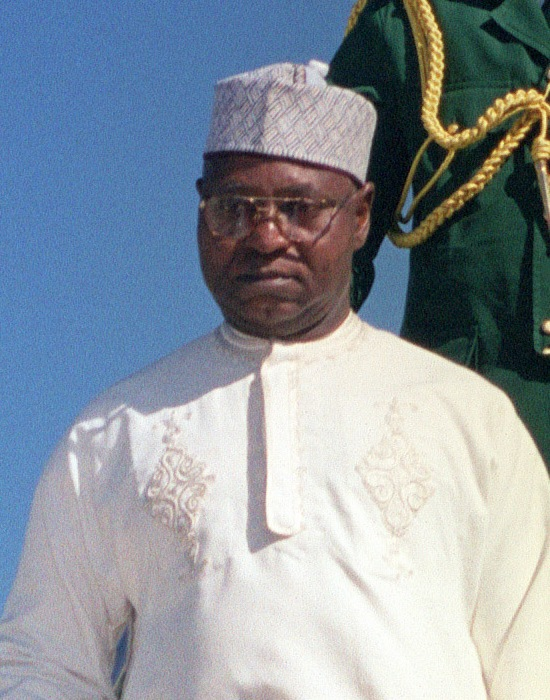
Full Name: Abdulsalami Alhaji Abubakar
Abubakar was born in 1942 in Niger State, Nigeria.
He became Head of State after Abacha’s death in 1998.
He quickly initiated a transition to democratic governance.
His administration organized national elections in 1999.
He peacefully handed over power to a civilian government.
He is respected for restoring democracy in Nigeria.
Back to Top
12. Chief Olusegun Matthew Okikiola Aremu Obasanjo (1937– )
Full Name: Olusegun Matthew Okikiola Aremu Obasanjo
Obasanjo returned as a civilian president in 1999.
He was elected after years of military rule in Nigeria.
His government focused on economic growth and reforms.
He secured debt relief for Nigeria from international creditors.
His leadership strengthened democratic institutions.
He completed two terms and left office in 2007.
Back to Top
13. Umaru Musa Yar’Adua (1951–2010)
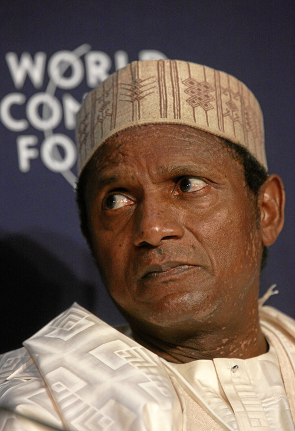
Full Name: Umaru Musa Yar’Adua
Yar’Adua was born in 1951 in Katsina State, Nigeria.
He became president in 2007 after democratic elections.
He was known for his calm and transparent leadership style.
He introduced reforms in governance and the Niger Delta.
His presidency was affected by prolonged illness.
He died in office in 2010.
Back to Top
14. Dr. Goodluck Ebele Azikiwe Jonathan (1957– )
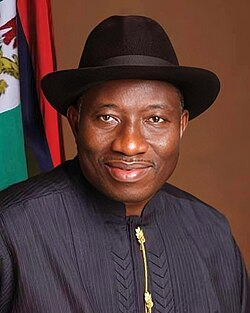
Full Name: Goodluck Ebele Azikiwe Jonathan
Jonathan was born in 1957 in Bayelsa State, Nigeria.
He became president in 2010 after Yar’Adua’s death.
He later won the 2011 presidential election.
His tenure saw growth in telecommunications and the economy.
However, it was challenged by Boko Haram insurgency.
He peacefully handed over power in 2015 after losing elections.
Back to Top
15. Muhammadu Buhari (1942– 2025)
Full Name: Muhammadu Buhari
Buhari returned as a civilian president in 2015.
He was re-elected in 2019 for a second term.
His administration focused on anti-corruption policies.
He invested in infrastructure like rail and roads.
However, economic challenges and insecurity persisted.
He completed his tenure and left office in 2023.
Back to Top
16. Asiwaju Bola Ahmed Adekunle Tinubu (1952– )
 Full Name:
Full Name: Bola Ahmed Adekunle Tinubu
Tinubu was born in 1952 in Lagos State, Nigeria.
He served as Governor of Lagos State from 1999 to 2007.
He became president of Nigeria in 2023.
His administration introduced major economic reforms.
Policies like fuel subsidy removal sparked national debate.
He is currently serving as Nigeria’s president.
Back to Top